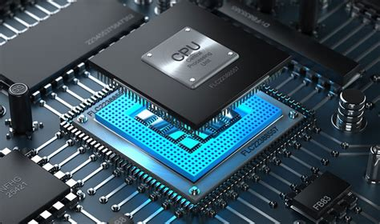

A arquitetura interna de um computador refere-se ao design e organização dos componentes físicos e lógicos que compõem o hardware do dispositivo. Essa arquitetura é responsável por definir como esses componentes interagem entre si, permitindo que as operações sejam executadas de forma eficiente e precisa

O processador é um dos componentes fundamentais da arquitetura interna de um computador. Ele é responsável por executar as instruções que são enviadas ao sistema e processar os dados que são manipulados pelos programas. O processador é dividido em diversas unidades funcionais, cada uma responsável por uma tarefa específica, como decodificar instruções, gerenciar o cache de memória e realizar operações matemáticas.
Outro componente importante da arquitetura interna do computador é a memória. Ela é responsável por armazenar os dados e as instruções que são utilizados durante a execução dos programas. Existem diferentes tipos de memória, como a RAM (memória de acesso aleatório) e a ROM (memória somente leitura), cada uma com suas próprias características e funcionalidades.
Além do processador e da memória, a arquitetura interna de um computador inclui outros componentes, como a placa-mãe, os dispositivos de armazenamento (como discos rígidos e drives de CD/DVD) e os dispositivos de entrada e saída (como teclado, mouse e monitor). Todos esses componentes trabalham juntos para garantir que o computador possa executar suas tarefas de forma eficiente e confiável.
Ao compreender a arquitetura interna de um computador, os programadores podem desenvolver programas que sejam otimizados para aproveitar ao máximo a capacidade do hardware. Isso pode resultar em aplicativos mais rápidos e eficientes, que ofereçam uma melhor experiência de uso para os usuários.
Fontes consultadas Acesse o site
Conversa com bito Acesse o site